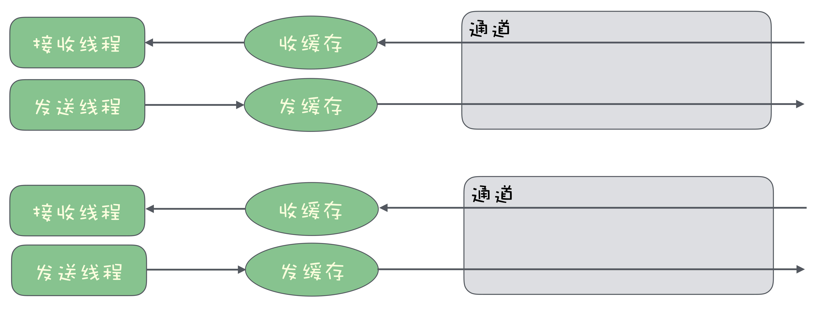
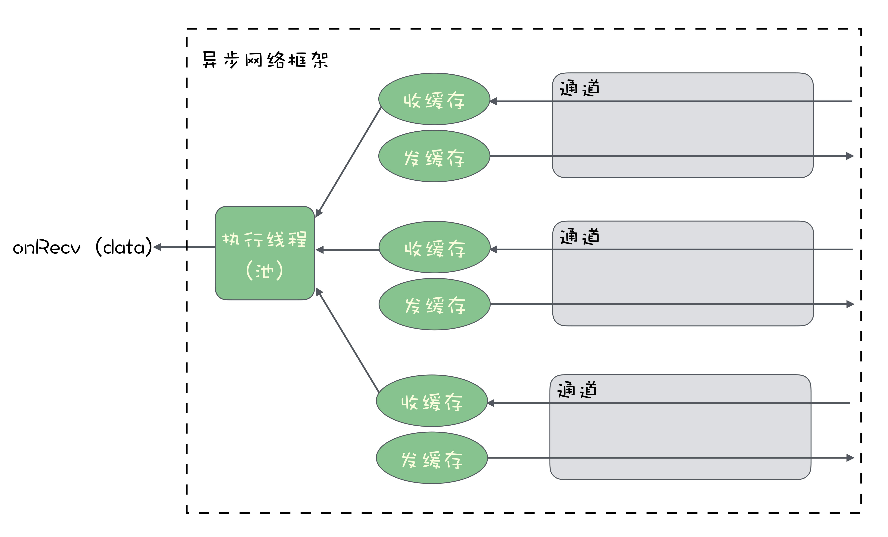
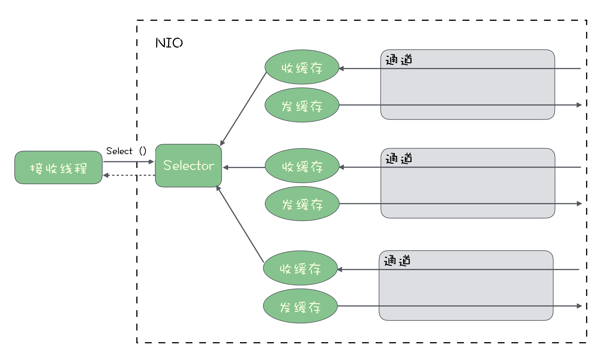

- 00 开篇词 优秀的程序员，你的技术栈中不能只有“增删改查”.md.html
- 00 预习 怎样更好地学习这门课？.md.html
- 01 为什么需要消息队列？.md.html
- 02 该如何选择消息队列？.md.html
- 03 消息模型：主题和队列有什么区别？.md.html
- 04 如何利用事务消息实现分布式事务？.md.html
- 05 如何确保消息不会丢失.md.html
- 06 如何处理消费过程中的重复消息？.md.html
- 07 消息积压了该如何处理？.md.html
- 08 答疑解惑（一） 网关如何接收服务端的秒杀结果？.md.html
- 09 学习开源代码该如何入手？.md.html
- 10 如何使用异步设计提升系统性能？.md.html
- 11 如何实现高性能的异步网络传输？.md.html
- 12 序列化与反序列化：如何通过网络传输结构化的数据？.md.html
- 13 传输协议：应用程序之间对话的语言.md.html
- 14 内存管理：如何避免内存溢出和频繁的垃圾回收？.md.html
- 15 Kafka如何实现高性能IO？.md.html
- 16 缓存策略：如何使用缓存来减少磁盘IO？.md.html
- 17 如何正确使用锁保护共享数据，协调异步线程？.md.html
- 18 如何用硬件同步原语（CAS）替代锁？.md.html
- 19 数据压缩：时间换空间的游戏.md.html
- 20 RocketMQ Producer源码分析：消息生产的实现过程.md.html
- 21 Kafka Consumer源码分析：消息消费的实现过程.md.html
- 22 Kafka和RocketMQ的消息复制实现的差异点在哪？.md.html
- 23 RocketMQ客户端如何在集群中找到正确的节点？.md.html
- 24 Kafka的协调服务ZooKeeper：实现分布式系统的“瑞士军刀”.md.html
- 25 RocketMQ与Kafka中如何实现事务？.md.html
- 26 MQTT协议：如何支持海量的在线IoT设备.md.html
- 27 Pulsar的存储计算分离设计：全新的消息队列设计思路.md.html
- 28 答疑解惑（二）：我的100元哪儿去了？.md.html
- 29 流计算与消息（一）：通过Flink理解流计算的原理.md.html
- 30 流计算与消息（二）：在流计算中使用Kafka链接计算任务.md.html
- 31 动手实现一个简单的RPC框架（一）：原理和程序的结构.md.html
- 32 动手实现一个简单的RPC框架（二）：通信与序列化.md.html
- 33 动手实现一个简单的RPC框架（三）：客户端.md.html
- 34 动手实现一个简单的RPC框架（四）：服务端.md.html
- 35 答疑解惑（三）：主流消息队列都是如何存储消息的？.md.html
- 加餐 JMQ的Broker是如何异步处理消息的？.md.html
- 结束语 程序员如何构建知识体系？.md.html
11 如何实现高性能的异步网络传输？
你好，我是李玥。上一节课我们学习了异步的线程模型，异步与同步模型最大的区别是，同步模型会阻塞线程等待资源，而异步模型不会阻塞线程，它是等资源准备好后，再通知业务代码来完成后续的资源处理逻辑。这种异步设计的方法，可以很好地解决 IO 等待的问题。
我们开发的绝大多数业务系统，它都是 IO 密集型系统。跟 IO 密集型系统相对的另一种系统叫计算密集型系统。通过这两种系统的名字，估计你也能大概猜出来 IO 密集型系统是什么意思。
IO 密集型系统大部分时间都在执行 IO 操作，这个 IO 操作主要包括网络 IO 和磁盘 IO，以及与计算机连接的一些外围设备的访问。与之相对的计算密集型系统，大部分时间都是在使用 CPU 执行计算操作。我们开发的业务系统，很少有非常耗时的计算，更多的是网络收发数据，读写磁盘和数据库这些 IO 操作。这样的系统基本上都是 IO 密集型系统，特别适合使用异步的设计来提升系统性能。
应用程序最常使用的 IO 资源，主要包括磁盘 IO 和网络 IO。由于现在的 SSD 的速度越来越快，对于本地磁盘的读写，异步的意义越来越小。所以，使用异步设计的方法来提升 IO 性能，我们更加需要关注的问题是，如何来实现高性能的异步网络传输。
今天，咱们就来聊一聊这个话题。
理想的异步网络框架应该是什么样的？
在我们开发的程序中，如果要实现通过网络来传输数据，需要用到开发语言提供的网络通信类库。大部分语言提供的网络通信基础类库都是同步的。一个 TCP 连接建立后，用户代码会获得一个用于收发数据的通道。每个通道会在内存中开辟两片区域用于收发数据的缓存。
发送数据的过程比较简单，我们直接往这个通道里面来写入数据就可以了。用户代码在发送时写入的数据会暂存在缓存中，然后操作系统会通过网卡，把发送缓存中的数据传输到对端的服务器上。
只要这个缓存不满，或者说，我们发送数据的速度没有超过网卡传输速度的上限，那这个发送数据的操作耗时，只不过是一次内存写入的时间，这个时间是非常快的。所以，发送数据的时候同步发送就可以了，没有必要异步。
比较麻烦的是接收数据。对于数据的接收方来说，它并不知道什么时候会收到数据。那我们能直接想到的方法就是，用一个线程阻塞在那儿等着数据，当有数据到来的时候，操作系统会先把数据写入接收缓存，然后给接收数据的线程发一个通知，线程收到通知后结束等待，开始读取数据。处理完这一批数据后，继续阻塞等待下一批数据到来，这样周而复始地处理收到的数据。
 这就是同步网络 IO 的模型。同步网络 IO 模型在处理少量连接的时候，是没有问题的。但是如果要同时处理非常多的连接，同步的网络 IO 模型就有点儿力不从心了。
因为，每个连接都需要阻塞一个线程来等待数据，大量的连接数就会需要相同数量的数据接收线程。当这些 TCP 连接都在进行数据收发的时候，会导致什么情况呢？对，会有大量的线程来抢占 CPU 时间，造成频繁的 CPU 上下文切换，导致 CPU 的负载升高，整个系统的性能就会比较慢。
所以，我们需要使用异步的模型来解决网络 IO 问题。怎么解决呢？
你可以先抛开你知道的各种语言的异步类库和各种异步的网络 IO 框架，想一想，对于业务开发者来说，一个好的异步网络框架，它的 API 应该是什么样的呢？
我们希望达到的效果，无非就是，只用少量的线程就能处理大量的连接，有数据到来的时候能第一时间处理就可以了。

对于开发者来说，最简单的方式就是，事先定义好收到数据后的处理逻辑，把这个处理逻辑作为一个回调方法，在连接建立前就通过框架提供的 API 设置好。当收到数据的时候，由框架自动来执行这个回调方法就好了。
实际上，有没有这么简单的框架呢？
使用 Netty 来实现异步网络通信
在 Java 中，大名鼎鼎的 Netty 框架的 API 设计就是这样的。接下来我们看一下如何使用 Netty 实现异步接收数据。
// 创建一组线性
EventLoopGroup group = new NioEventLoopGroup();
try{
// 初始化 Server
ServerBootstrap serverBootstrap = new ServerBootstrap();
serverBootstrap.group(group);
serverBootstrap.channel(NioServerSocketChannel.class);
serverBootstrap.localAddress(new InetSocketAddress("localhost", 9999));
// 设置收到数据后的处理的 Handler
serverBootstrap.childHandler(new ChannelInitializer<SocketChannel>() {
protected void initChannel(SocketChannel socketChannel) throws Exception {
socketChannel.pipeline().addLast(new MyHandler());
}
});
// 绑定端口，开始提供服务
ChannelFuture channelFuture = serverBootstrap.bind().sync();
channelFuture.channel().closeFuture().sync();
} catch(Exception e){
e.printStackTrace();
} finally {
group.shutdownGracefully().sync();
}
这段代码它的功能非常简单，就是在本地 9999 端口，启动了一个 Socket Server 来接收数据。我带你一起来看一下这段代码：
- 首先我们创建了一个 EventLoopGroup 对象，命名为 group，这个 group 对象你可以简单把它理解为一组线程。这组线程的作用就是来执行收发数据的业务逻辑。
- 然后，使用 Netty 提供的 ServerBootstrap 来初始化一个 Socket Server，绑定到本地 9999 端口上。
- 在真正启动服务之前，我们给 serverBootstrap 传入了一个 MyHandler 对象，这个 MyHandler 是我们自己来实现的一个类，它需要继承 Netty 提供的一个抽象类：ChannelInboundHandlerAdapter，在这个 MyHandler 里面，我们可以定义收到数据后的处理逻辑。这个设置 Handler 的过程，就是我刚刚讲的，预先来定义回调方法的过程。
- 最后就可以真正绑定本地端口，启动 Socket 服务了。
服务启动后，如果有客户端来请求连接，Netty 会自动接受并创建一个 Socket 连接。你可以看到，我们的代码中，并没有像一些同步网络框架中那样，需要用户调用 Accept() 方法来接受创建连接的情况，在 Netty 中，这个过程是自动的。
当收到来自客户端的数据后，Netty 就会在我们第一行提供的 EventLoopGroup 对象中，获取一个 IO 线程，在这个 IO 线程中调用接收数据的回调方法，来执行接收数据的业务逻辑，在这个例子中，就是我们传入的 MyHandler 中的方法。
Netty 本身它是一个全异步的设计，我们上节课刚刚讲过，异步设计会带来额外的复杂度，所以这个例子的代码看起来会比较多，比较复杂。但是你看，其实它提供了一组非常友好 API。
真正需要业务代码来实现的就两个部分：一个是把服务初始化并启动起来，还有就是，实现收发消息的业务逻辑 MyHandler。而像线程控制、缓存管理、连接管理这些异步网络 IO 中通用的、比较复杂的问题，Netty 已经自动帮你处理好了，有没有感觉很贴心？所以，非常多的开源项目使用 Netty 作为其底层的网络 IO 框架，并不是没有原因的。
在这种设计中，Netty 自己维护一组线程来执行数据收发的业务逻辑。如果说，你的业务需要更灵活的实现，自己来维护收发数据的线程，可以选择更加底层的 Java NIO。其实，Netty 也是基于 NIO 来实现的。
使用 NIO 来实现异步网络通信
在 Java 的 NIO 中，它提供了一个 Selector 对象，来解决一个线程在多个网络连接上的多路复用问题。什么意思呢？在 NIO 中，每个已经建立好的连接用一个 Channel 对象来表示。我们希望能实现，在一个线程里，接收来自多个 Channel 的数据。也就是说，这些 Channel 中，任何一个 Channel 收到数据后，第一时间能在同一个线程里面来处理。
我们可以想一下，一个线程对应多个 Channel，有可能会出现这两种情况：
- 线程在忙着处理收到的数据，这时候 Channel 中又收到了新数据；
- 线程闲着没事儿干，所有的 Channel 中都没收到数据，也不能确定哪个 Channel 会在什么时候收到数据。

Selecor 通过一种类似于事件的机制来解决这个问题。首先你需要把你的连接，也就是 Channel 绑定到 Selector 上，然后你可以在接收数据的线程来调用 Selector.select() 方法来等待数据到来。这个 select 方法是一个阻塞方法，这个线程会一直卡在这儿，直到这些 Channel 中的任意一个有数据到来，就会结束等待返回数据。它的返回值是一个迭代器，你可以从这个迭代器里面获取所有 Channel 收到的数据，然后来执行你的数据接收的业务逻辑。
你可以选择直接在这个线程里面来执行接收数据的业务逻辑，也可以将任务分发给其他的线程来执行，如何选择完全可以由你的代码来控制。